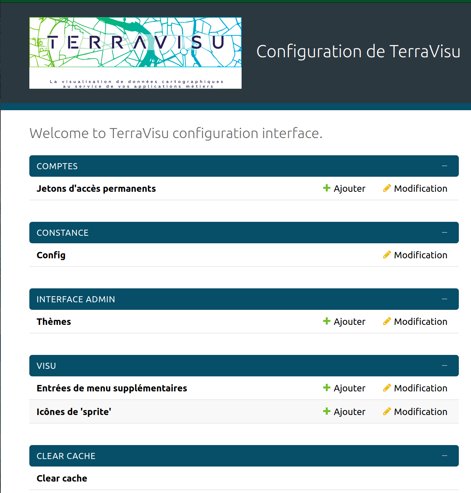
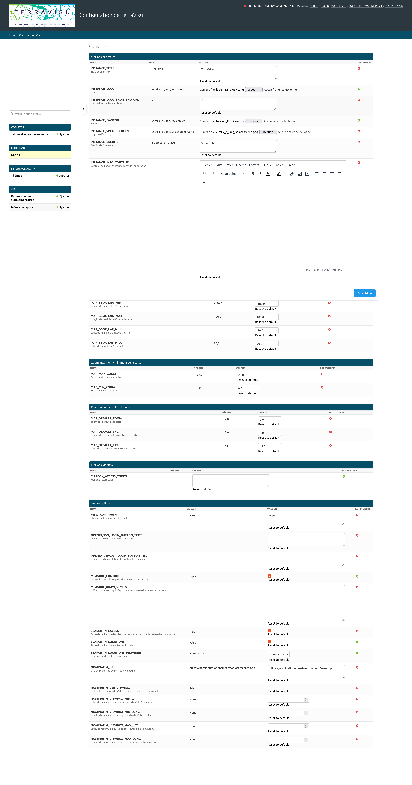

Module de configuration¶
Le chemin d’accès au module de configuration est toujours constitué de l’URL du visualiseur suivis de /config.
Panneau de configuration¶

Panneau de configuration¶
Options de configuration¶
L’entrée Config dans le panneau de configuration offre le moyen à l’utilisateur de spécifier finement certains paramètres, activer des outils supplémentaires, personnaliser le thème de l’application, etc.
Constance¶

Page de configuration¶
Frontend options¶
Options permettant d’activier ou paramétrer des fonctionnalités supplémentaires dans l’application.
VIEW_ROOT_PATHChemin de la vue racine de l’applicationExemple : view
OPENID_SSO_LOGIN_BUTTON_TEXTTexte du bouton de connexion pour OpenIDExemple : Connexion CD49
OPENID_DEFAULT_LOGIN_BUTTON_TEXTTexte par défaut du bouton de connexionExemple : Autre utilisateur
MEASURE_CONTROL: Option pour activer lecontrôle MapBox des mesures sur la carteMEASURE_DRAW_STYLESPersonnalisation du style pour le contrôle des mesures sur la carteExemple :
SEARCH_IN_LOCATIONS: Option pour activer la recherche par lieux sur la carteSEARCH_IN_LOCATIONS_PROVIDER: Fournisseur de recherche par lieu (Nominatim uniquement)NOMINATIM_URL: URL de recherche du service Nominatim (https://nominatim.openstreetmap.org/search.php)NOMINATIM_USE_VIEWBOX: Option ‘viewbox’ de Nominatim pour filtrer les résultatsNOMINATIM_VIEWBOX_MIN_LAT: Latitude minimum pour l’option ‘viewbox’ de NominatimNOMINATIM_VIEWBOX_MIN_LONG: Longitude minimum pour l’option ‘viewbox’ de NominatimNOMINATIM_VIEWBOX_MAX_LAT: Latitude maximum pour l’option ‘viewbox’ de NominatimNOMINATIM_VIEWBOX_MAX_LONG: Longitude maximum pour l’option ‘viewbox’ de Nominatim
General options¶
INSTANCE_TITLETitre de l’instanceExemple : Observatoire du territoire du Maine-et-Loire
Map BBOX options¶
Ces paramètres permettent de limiter l’étendue de la recherche si les options NOMINATIM_VIEWBOX_ ne sont pas renseignées.
MAP_BBOX_LNG_MIN: Longitude minimum de la BBox de la carteMAP_BBOX_LNG_MAX: Longitude maximum de la BBox de la carteMAP_BBOX_LAT_MIN: Latitude minimum de la BBox de la carteMAP_BBOX_LAT_MAX: Latitude maximum de la BBox de la carte
Map Zoom options¶
Ces paramètres permettent de spécifier un niveau minimal et maximal entre lesquels il sera possible de naviguer sur la carte.
MAP_MAX_ZOOM: Zoom maximum de la carteMAP_MIN_ZOOM: Zoom minimum de la carte
Map default options¶
Ces paramètres permettent de définir l’emprise spatiale de l’application. Cette emprise pourra être redéfinie au niveau de chaque vue dans l’outil d’administration (se référer à la section Créer une vue).
MAP_DEFAULT_ZOOM: Zoom par défaut de la carteMAP_DEFAULT_LNG: Longitude par défaut du centre de la carteMAP_DEFAULT_LAT: Latitude par défaut du centre de la carte
Mapbox options¶
La clé Mapbox est obligatoire pour l’affichage des cartes de définition de l’empriqse spatiale dans l’outil d’administration.
MAPBOX_ACCESS_TOKEN: Clé Mapbox
Theme Options¶
Options de personnalisation du thème de l’application.
INSTANCE_LOGO: Logo affiché en haut à gauche du menu des vuesINSTANCE_LOGO_FRONTEND_URL: URL du logo de l’applicationINSTANCE_FAVICON: FaviconINSTANCE_SPLASHSCREEN_ENABLED: Active le logo de démarrageINSTANCE_SPLASHSCREEN: Logo de démarrageINSTANCE_CREDITS: Crédits de l’instance, s’affiche sur la carte en mode impressionINSTANCE_INFO_CONTENT: Contenu de l’onglet ‘Informations’ de l’application